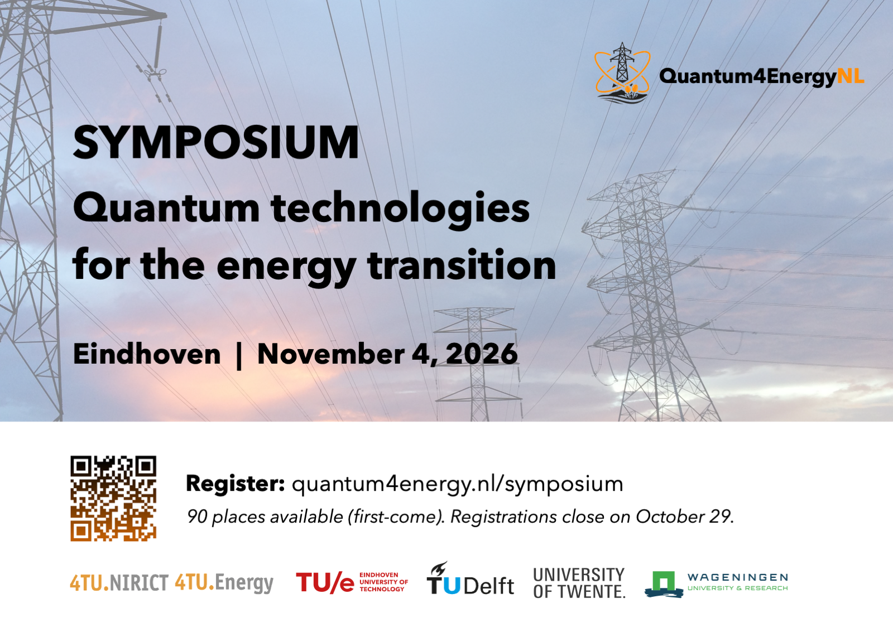

On November 4, the Quantum4EnergyNL initiative is organizing a full-day symposium in Eindhoven on what quantum technologies (computing, sensing, communications) could do for the energy transition, and what it takes to bring them from the lab to the grid. Engineers, researchers and professionals from academia, industry, and policy, whether coming from the energy or the quantum side, are warmly invited to hear about the latest work in the Netherlands and to meet the community.
Symposium details
Register for the symposiumProgramme
| Time | Session |
|---|---|
| 9:45 – 10:30 | Registration and welcome with coffee |
| 10:30 – 11:00 | Opening — The Quantum4EnergyNL initiativeNikolaos Paterakis (TU Eindhoven) |
| 11:00 – 11:45 | Keynote: TBA Corey O'Meara (E.ON, Germany) |
| 11:45 – 12:05 | QDNL presentation TBA |
| 12:05 – 13:15 | Lunch break |
| 13:15 – 13:45 | TBA Sharon Dolmans (TU Eindhoven) |
| 13:45 – 14:15 | Quantum sensing of magnetic fields at TNO: program overview and applications in energy grids Hugo Doelman (TNO) |
| 14:15 – 14:45 | TBA Matthijs Vernooij (Enexis) |
| 14:45 – 15:15 | Coffee break |
| 15:15 – 15:45 | Quantum resource estimation for minimising energy grid lossesCamille de Valk (Alliander) |
| 15:45 – 16:15 | TBA Zeynab Kaseb (TU Delft) |
| 16:15 – 16:45 | TBA |
| 16:45 – 17:45 | Networking drinks |
Just before lunch we will take a group photo at the front of the presentation room, for use on the Quantum4EnergyNL website and in communications about the initiative. Joining in is optional.
